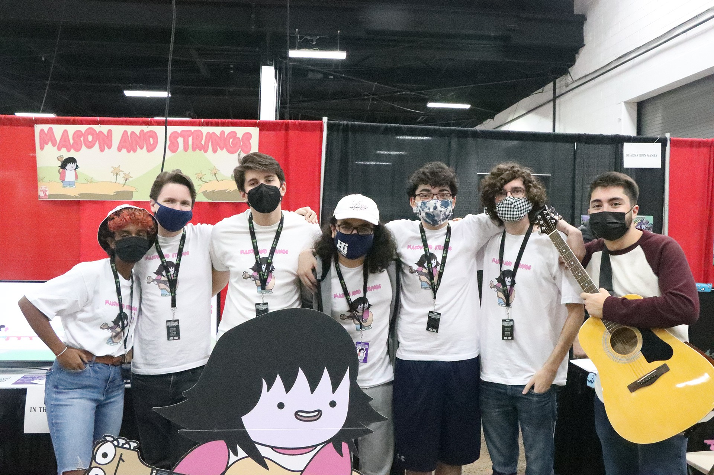
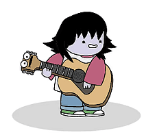
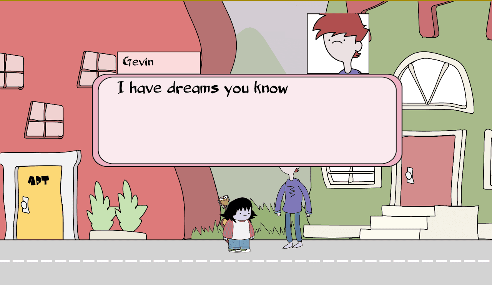
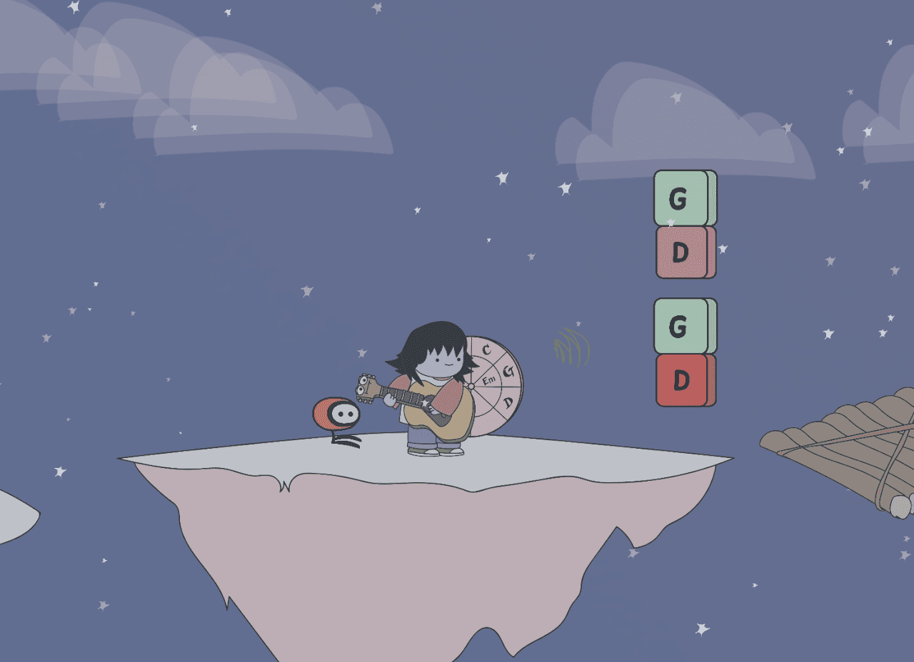

1. The Concept & Musical Mechanics
Mason & Strings was built on the core creative premise of translating musical intuition into kinetic game mechanics. Rather than treating music merely as a passive soundtrack, we wanted the physics of guitar strings—tension, pitch, vibration, and resonance—to directly drive player movement and puzzle progression.
"Mason & Strings is a 2D puzzle platformer designed with a group of friends, focused on creating a whimsical world of characters and music. Mason comes with an array of grappling hook and chord-focused mechanics to draw you in and make you feel like you're learning to play the guitar alongside Mason."— Project Mission Statement
2. Grappling Physics & Level Architecture
As Lead Developer and Level Designer, I designed and coded the physics engine for Mason's signature grappling mechanic in Unity C#. Players launch guitar string lines toward musical anchor points throughout each level.

Key development responsibilities included:
- Dynamic Rope & Grapple Physics: Implemented elastic spring-joint calculations that allow Mason to swing, build momentum, and launch across vertical gaps with intuitive arc control.
- Harmonic Puzzle Triggers: Designed environmental switches that activate only when played with specific chord harmonies, synchronizing player input with audio stem playback.
- Level Pacing & Spatial Flow: Authored 15+ interactive puzzle stages, ramping gradually from simple grappling tutorials to multi-tier rhythm-and-swing challenge sequences.



3. Convention Showcase & Steam Release
Following rapid prototyping and community playtesting, our team submitted the game to indie festivals. The title was selected for public exhibition at the TooManyGames convention.
"We were accepted into the indie games showcase at the TooManyGames convention, where we presented our game to a wider audience in October and beta tested the game ahead of the Steam release in December."— Convention Milestone Note
Presenting on the convention showroom floor allowed us to conduct live observational user research with hundreds of players across diverse skill levels. We tuned jump-buffer timings, relaxed grapple angle constraints, and polished audio feedback based directly on player telemetry before shipping to Steam.